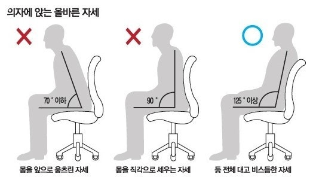

서비스 소개
올바른 자세를 유지하는 연습

올바른 자세가 무엇인지 알고, 유지하는 시간을 점차 늘려가며 연습합니다.
올바른 자세를 유지하는 시간을 기록하고 편안하게 느껴지도록 습관화합니다.
훈련 기능
단계별 자세 유지 연습
본인의 상황에 따라 올바른 자세를 연습해볼 수 있습니다.
자세 유지 기록
자세 유지 시간을 기록하고, 점차 늘려가며 연습합니다.
자세 유지 피드백
자세 유지 시간을 분석하여, 올바른 자세를 유지할 수 있도록 피드백을 제공합니다.
이용 방법
- 회원가입 및 로그인
- 올바른 자세에 대한 정보 확인
- 따라해보기 기능을 통해 연습
- 자세 유지 기록 확인
교정 준비 설정
사용자 정보
0 / 10
영상 활용 의의
동의 후 훈련을 시작할 수 있습니다.
교정 훈련 소식 받기
이메일을 입력한 뒤 신청해주세요.